Our Work — 25+ Static Ad Creatives
Real static ad creatives designed by 100 Creatives. Study the work. Steal the frameworks. Or hire us to make yours.
In the world of DTC advertising, static ad creatives are the unsung hero. While video gets the headlines, it is static ads that run the show in most high-performing Meta ad accounts. They are cheaper to produce, faster to iterate, and shockingly effective when designed with the right principles. The best DTC brands in the world, from Chobani to Glossier to AG1, rely on static creatives as the foundation of their paid social strategy.
What separates a static ad that converts from one that gets scrolled past? It comes down to a handful of principles: bold visual hierarchy, a clear value proposition that can be read in under two seconds, product-first composition, and a relentless focus on stopping the scroll. Every ad in this gallery was designed with those principles in mind.
We built this page as a resource for DTC founders, creative strategists, and performance marketers who want to see what good looks like. Browse by brand, read our breakdowns of why each creative works, and use these examples as a benchmark for your own ad program. If you want us to build creatives like these for your brand, we deliver in 48 hours.
Food & Beverage
Chobani is one of the most recognized food brands in the United States. Our creative approach leaned into bold, appetite-driven compositions with product front and center. Every ad was designed to feel premium yet approachable, matching the warmth of the Chobani brand while delivering the clarity required to convert on a crowded Meta feed.
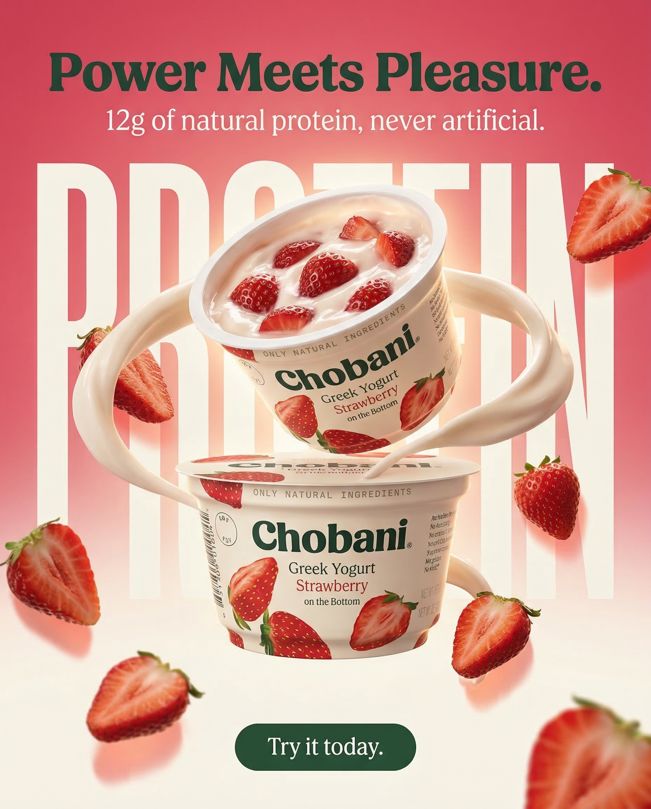
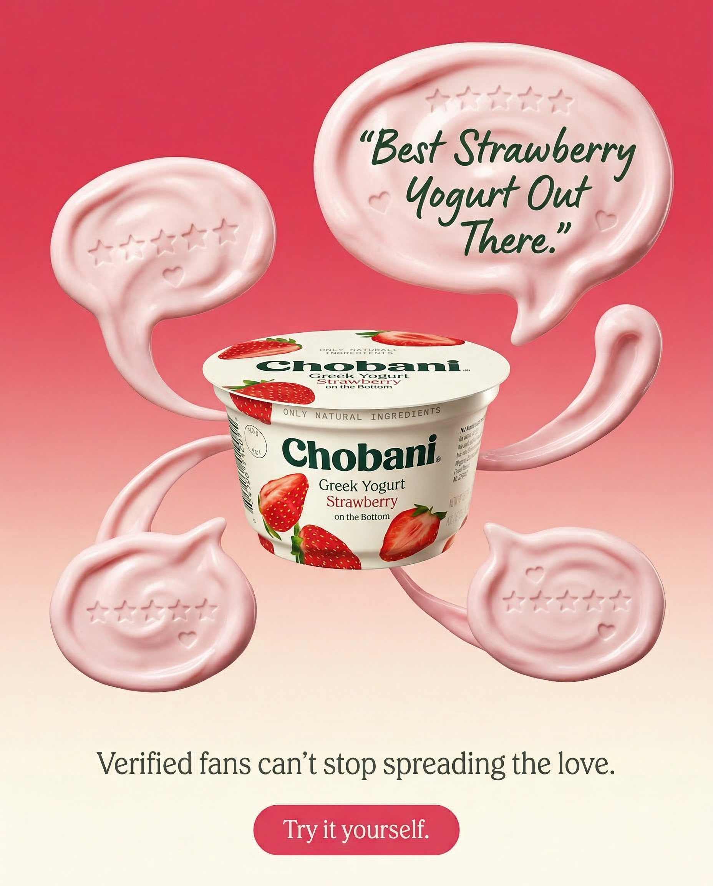

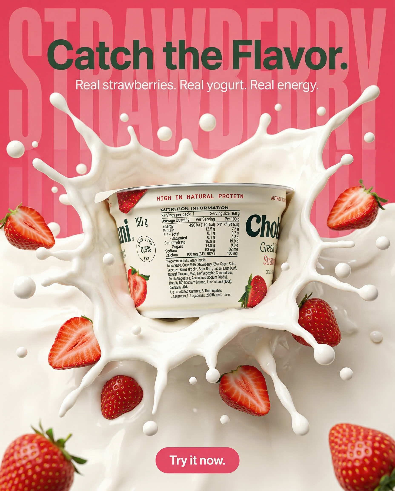

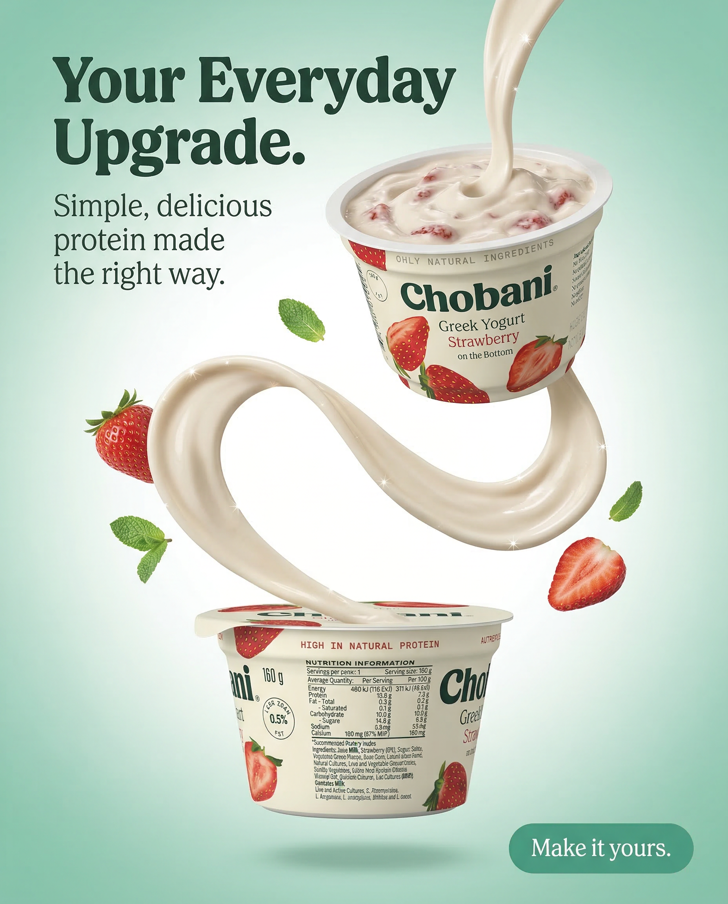

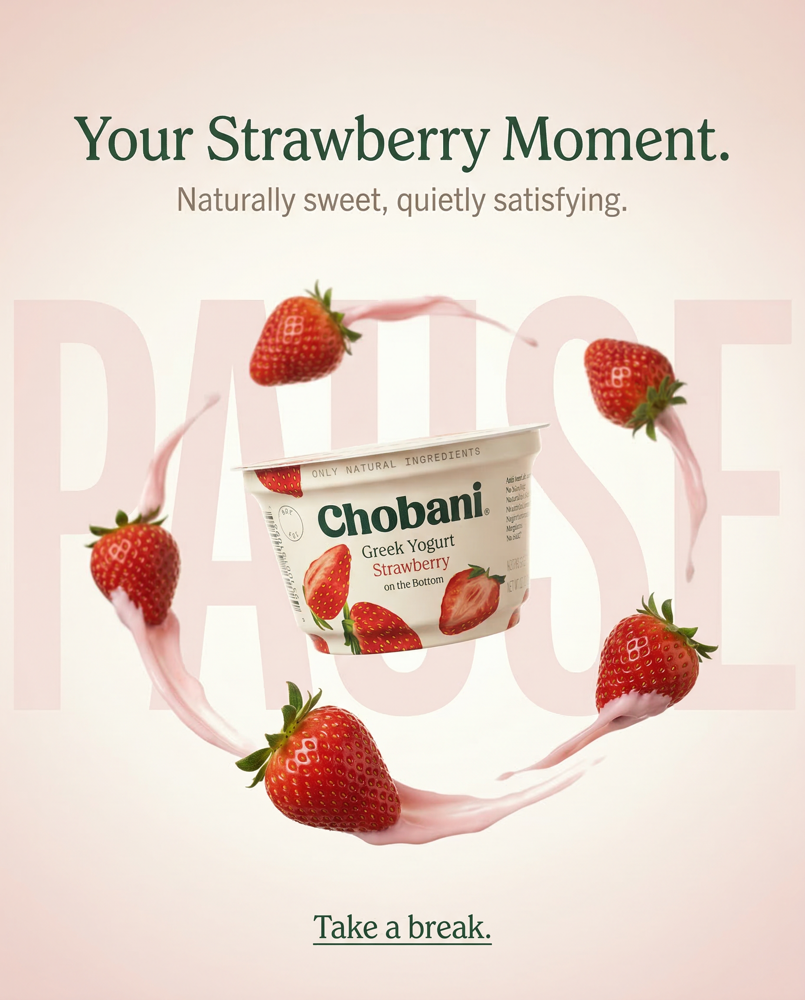

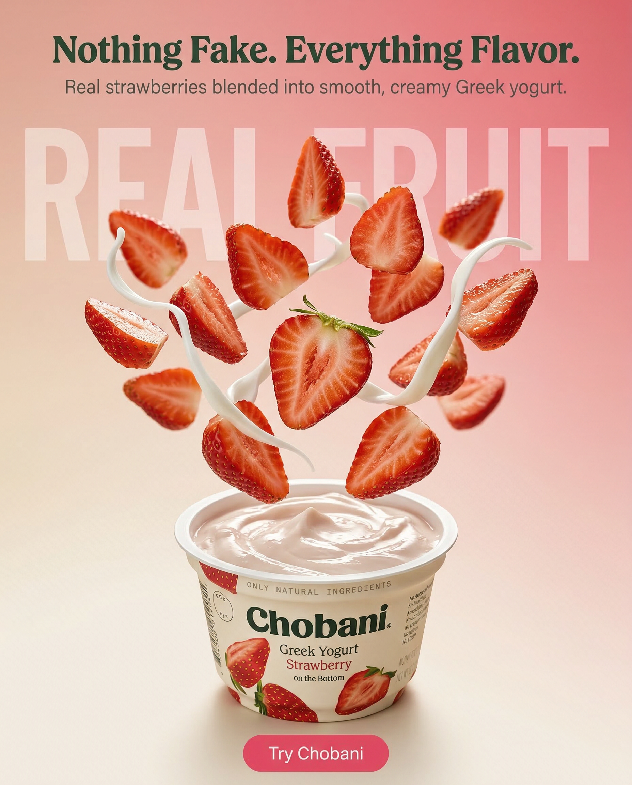
Supplements & Wellness
ARMRA is a science-backed wellness brand built around bovine colostrum. The creative challenge was positioning a technically complex product in a way that feels clean, credible, and aspirational. Our approach paired clinical credibility signals with bold color blocking and premium packaging photography, creating ads that feel like they belong in a dermatologist's office and your Instagram feed at the same time.


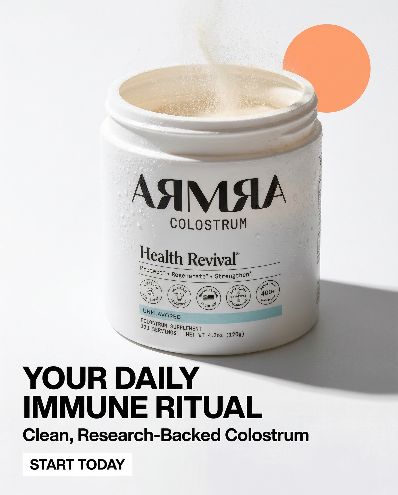

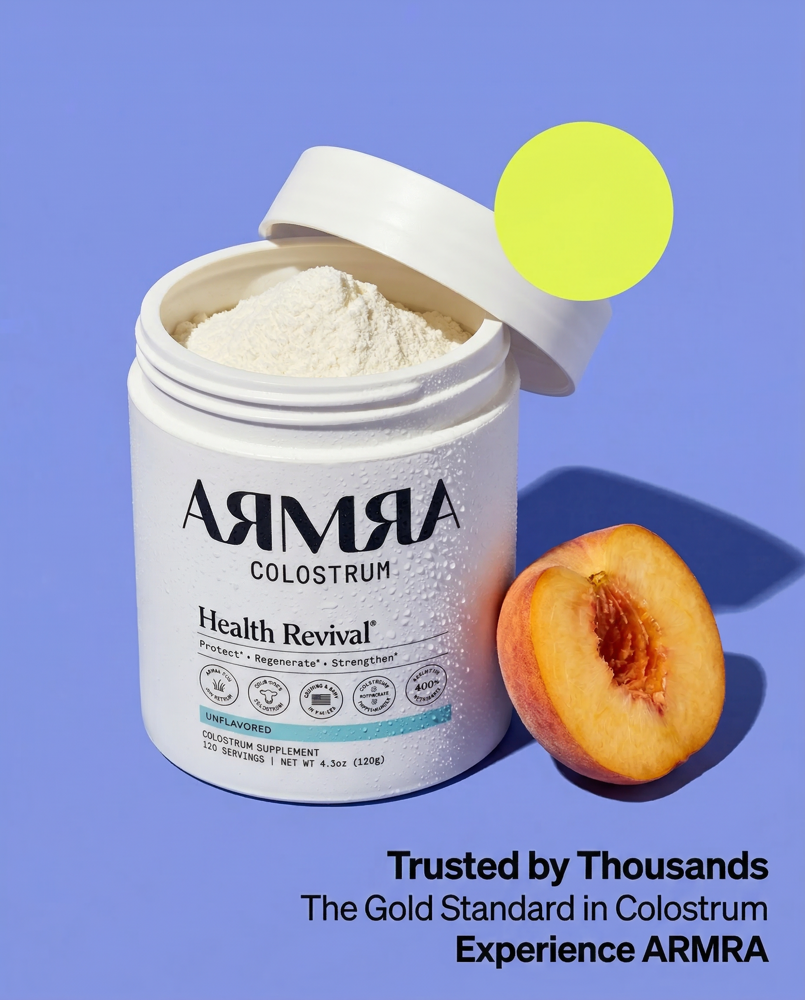

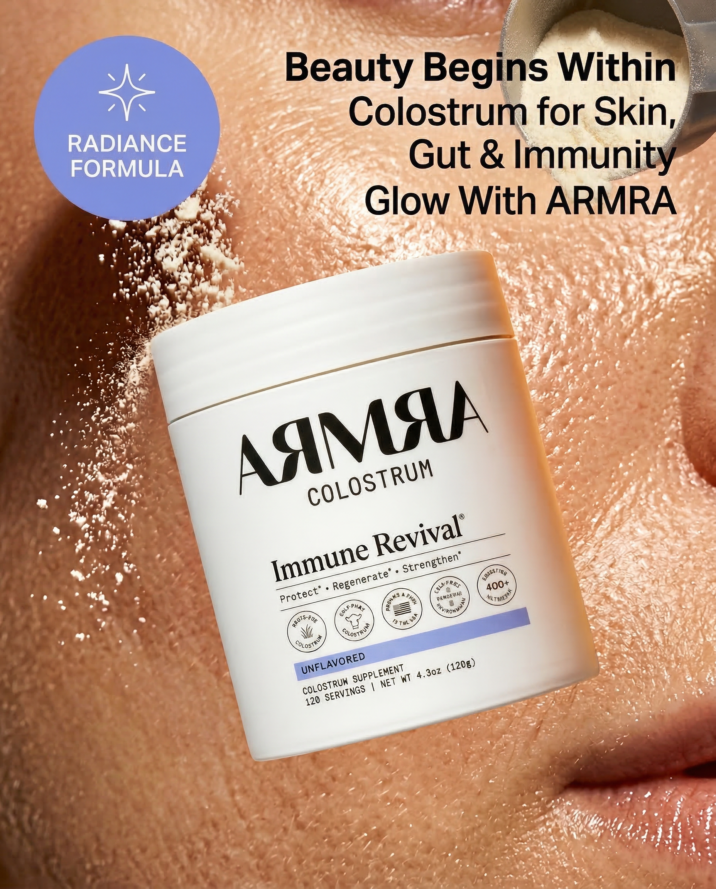

Beverage & Lifestyle
Barefoot Wines is one of the best-selling wine brands in the world, known for its fun, approachable personality. Our creative approach emphasized playful energy, textured backgrounds, and lifestyle-driven headlines that capture the spirit of casual celebration. Every ad was designed to make you feel like opening a bottle, not just buying one.

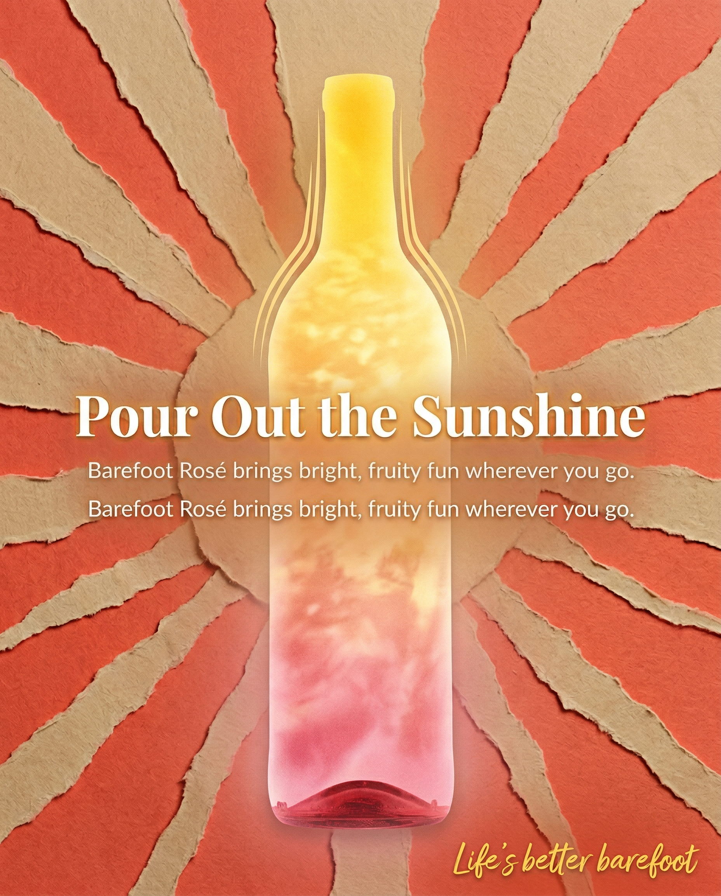

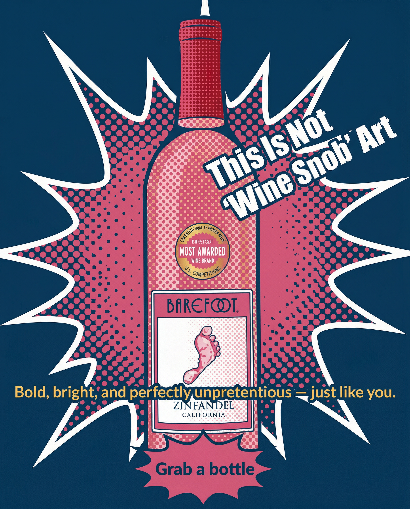

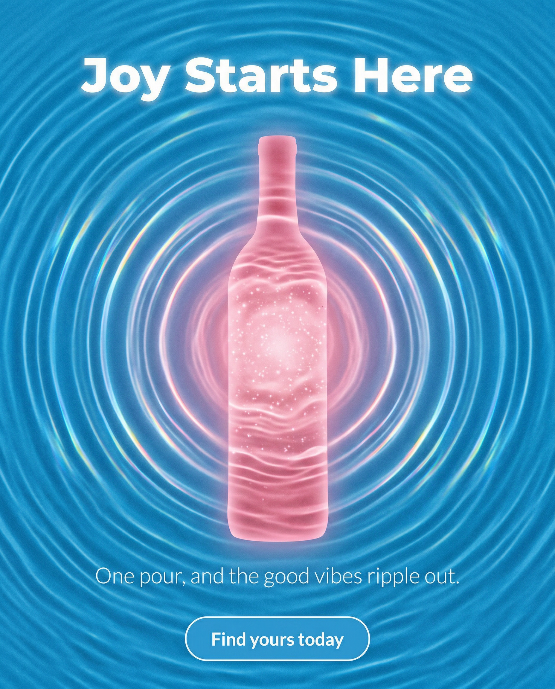
What We Learned
01
Across all 25 creatives in this gallery, not a single one tries to communicate more than one core idea. The Chobani ads say "this tastes amazing." The ARMRA ads say "this is backed by science." The Barefoot ads say "this is for fun people." When a static ad tries to do too much, it does nothing. The constraint of a single message forces clarity, and clarity is what converts on a feed where users give you less than 1.5 seconds of attention.
02
Every high-converting DTC ad has a clear reading order: headline first, product second, CTA third. This hierarchy is established through size, contrast, and spatial positioning. The headline is always the largest text element. The product always has the most visual weight. The CTA is always in a predictable location. This is not about being creative. This is about being clear. The best DTC advertisers treat their static ads like billboards, not brochures.
03
Before a user reads a single word, color has already triggered an emotional response. Chobani's warm earth tones signal comfort and naturalness. ARMRA's deep blues and clinical whites signal trust and efficacy. Barefoot's saturated brights signal energy and fun. The most sophisticated DTC creative teams choose their color palette before they write a headline, because color determines whether the user stops scrolling long enough to read anything at all.
04
In every single ad in this gallery, the product is visible, prominent, and recognizable. This seems obvious, but a staggering number of DTC ads bury the product behind lifestyle imagery, dense copy, or overly clever design concepts. The product shot serves a critical function: it tells the user what they are looking at. Without it, even the best headline and the most compelling offer will underperform, because the user cannot form a mental image of what they are buying.
05
Star ratings, customer counts, press logos, and testimonial snippets are not just copy additions. They are design elements that deserve visual prominence. The ARMRA ads in particular demonstrate this: credibility signals are given dedicated space, distinct typographic treatment, and strategic placement within the visual hierarchy. When social proof is treated as a design element rather than a text footnote, it becomes a scroll-stopping mechanism in its own right.
Frequently Asked Questions
A high-converting DTC ad combines a clear value proposition, bold visual hierarchy, product-first composition, and a strong call to action. The best static ads stop the scroll in under one second by using contrasting colors, benefit-driven headlines, and social proof elements like star ratings or customer quotes. They speak directly to a single pain point and make the next step obvious.
Most DTC brands running Meta ads should test 5 to 15 new static ad creatives per week. The goal is creative volume with variation. Test different angles (benefit vs. social proof vs. urgency), different visual treatments (product-only vs. lifestyle vs. UGC-style), and different headline frameworks. The brands that win on paid social are the ones that treat creative testing as an ongoing system, not a one-time project.
For Meta (Facebook and Instagram), the most important ad sizes are 1080x1080 pixels (square, for feed), 1080x1350 pixels (4:5 portrait, which takes up maximum feed real estate), and 1080x1920 pixels (9:16 vertical, for Stories and Reels). Most performance media buyers prioritize the 1080x1350 format because it dominates the mobile feed. Always design mobile-first, since over 90% of Meta ad impressions happen on phones.
Static ads and video ads serve different roles, but static ads remain the workhorse of most DTC paid social programs. They are faster and cheaper to produce, easier to test at volume, and often deliver comparable or better cost-per-acquisition than video. Many top DTC brands run 60 to 70 percent static creatives in their ad accounts. The key advantage of static is speed to test: you can produce and launch 20 static variations in the time it takes to produce one video.
100 Creatives designs high-converting static ad creatives for DTC brands doing $5M+ a year. We deliver in as fast as 48 hours, with revisions included until it's right. Email hello@100creatives.com to get started, or browse our case studies to see more of our work.
We deliver high-converting static ad creatives in as fast as 48 hours. No retainers. No bloated timelines. Just great work, fast.
Get Startedhello@100creatives.com — We respond within 4 hours